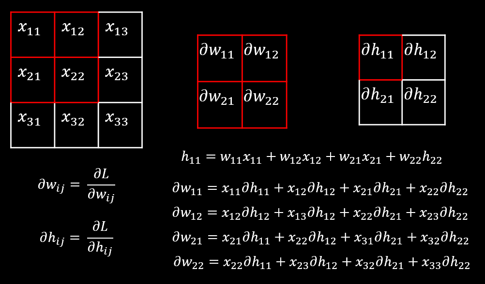

Convolutional Layer 란?
Convolution은 합성곱으로 2가지 연산을 사용합니다.
- 각 원소끼리 곱합니다. (element wise multiplication)
- 각 원소를 더합니다.
이해를 돕기위해 그림으로 살펴보겠습니다. 아래 그림과 같이 각 원소를 곱하고 합한 값을 활성화 함수를 통과하여 최종적으로 값을 만듭니다.(아래 그림은 활성화 함수를 생략한 그림입니다.)

Convolutional Layer는 Feature Maps과 Filters의 Convolution 연산을 통해 그 다음 Feature Maps을 만들어 내는 작업을 반복합니다. 여기서 filters가 학습 파라미터 입니다.
입력 이미지 -> Filters(kernel) -> Feature Maps(Channels) -> Filters(kernel) -> Feature Maps(Channels) -> ...
Convolutional Layer는 설정 가능한 파라미터가 있습니다.
stride: filter가 움직이는 간격입니다.padding: Feature Map의 테두리 부분의 정보 손실을 줄이기 위해서 테두리를 특정한 값(보통 0)으로 채워 넣는 방법입니다. padding은 몇개의 테두리를 채울지에 대한 값입니다.filter의 수(가중치의 수) :
Convolutional Layer 역전파는 쉽게 표현하는 경우 아래 그림과 같습니다.

output을 계산하기 위해서 각자의 id를 가지고 있는 weight가 사용된 곳을 보시면 이해하기 쉽습니다. 예를 들어서 은 를 연산하는데 각각 사용되었기 때문에 이들의 미분 값의 합으로 최종적으로 업데이트 할 기울기를 만듭니다. 역전파는 Layer 따로 따로 간단하게 어떻게 동작하는지를 전부 살펴보고 마지막에 보면 더 쉬운거 같습니다.
convolutional_layer.c
forward_convolutional_layer
void forward_convolutional_layer(convolutional_layer l, network net)
{
int i, j;
fill_cpu(l.outputs*l.batch, 0, l.output, 1); /// output을 0으로 초기화
if(l.xnor){
binarize_weights(l.weights, l.n, l.c/l.groups*l.size*l.size, l.binary_weights);
swap_binary(&l);
binarize_cpu(net.input, l.c*l.h*l.w*l.batch, l.binary_input);
net.input = l.binary_input;
}
int m = l.n/l.groups; /// filter 개수
int k = l.size*l.size*l.c/l.groups; /// filter 크기
int n = l.out_w*l.out_h; /// output feature map 크기
for(i = 0; i < l.batch; ++i){
for(j = 0; j < l.groups; ++j){
float *a = l.weights + j*l.nweights/l.groups; /// 학습 시작 포인터
float *b = net.workspace;
float *c = l.output + (i*l.groups + j)*n*m; /// output 시작 포인터
float *im = net.input + (i*l.groups + j)*l.c/l.groups*l.h*l.w; /// input 시작 포인터
if (l.size == 1) {
b = im;
} else {
im2col_cpu(im, l.c/l.groups, l.h, l.w, l.size, l.stride, l.pad, b); /// 이미지를 columns로 변환
}
gemm(0,0,m,n,k,1,a,k,b,n,1,c,n); /// 컨볼루션 연산
}
}
if(l.batch_normalize){
forward_batchnorm_layer(l, net);
} else {
add_bias(l.output, l.biases, l.batch, l.n, l.out_h*l.out_w);
}
activate_array(l.output, l.outputs*l.batch, l.activation);
if(l.binary || l.xnor) swap_binary(&l);
}
forward
- convolution 연산
- batch normalization(no bias) or bias
- activation function
backward_convolutional_layer
void backward_convolutional_layer(convolutional_layer l, network net)
{
int i, j;
int m = l.n/l.groups; /// filter 개수
int k = l.size*l.size*l.c/l.groups; /// filter 크기
int n = l.out_w*l.out_h; /// output feature map 크기
gradient_array(l.output, l.outputs*l.batch, l.activation, l.delta); /// activation function 역전파
if(l.batch_normalize){
backward_batchnorm_layer(l, net); /// batch normalize 역전파
} else {
backward_bias(l.bias_updates, l.delta, l.batch, l.n, k); /// bias 역전파
}
for(i = 0; i < l.batch; ++i){
for(j = 0; j < l.groups; ++j){
float *a = l.delta + (i*l.groups + j)*m*k; /// gradient 포인터 이동
float *b = net.workspace;
float *c = l.weight_updates + j*l.nweights/l.groups; /// update 포인터 이동
float *im = net.input + (i*l.groups + j)*l.c/l.groups*l.h*l.w; /// 이미지 포인터
float *imd = net.delta + (i*l.groups + j)*l.c/l.groups*l.h*l.w;
if(l.size == 1){
b = im;
} else {
im2col_cpu(im, l.c/l.groups, l.h, l.w,
l.size, l.stride, l.pad, b); /// 이미지를 columns로 변환
}
gemm(0,1,m,n,k,1,a,k,b,k,1,c,n); /// b(image)를 전치행렬로 컨볼루션 연산
if (net.delta) {
a = l.weights + j*l.nweights/l.groups; /// weight 포인터 이동
b = l.delta + (i*l.groups + j)*m*k; /// gradient 포인터 이동
c = net.workspace;
if (l.size == 1) {
c = imd;
}
gemm(1,0,n,k,m,1,a,n,b,k,0,c,k); /// a(weight)를 전치행렬로 컨볼루션 연산
if (l.size != 1) {
col2im_cpu(net.workspace, l.c/l.groups, l.h, l.w, l.size, l.stride, l.pad, imd); /// columns을 이미지로 변환
}
}
}
}
}
backward
- activation function
- batch normalization(no bias) or bias
- convolution 연산
update_convolutional_layer
void update_convolutional_layer(convolutional_layer l, update_args a)
{
float learning_rate = a.learning_rate*l.learning_rate_scale;
float momentum = a.momentum;
float decay = a.decay;
int batch = a.batch;
axpy_cpu(l.n, learning_rate/batch, l.bias_updates, 1, l.biases, 1);
scal_cpu(l.n, momentum, l.bias_updates, 1);
if(l.scales){
axpy_cpu(l.n, learning_rate/batch, l.scale_updates, 1, l.scales, 1);
scal_cpu(l.n, momentum, l.scale_updates, 1);
}
axpy_cpu(l.nweights, -decay*batch, l.weights, 1, l.weight_updates, 1);
axpy_cpu(l.nweights, learning_rate/batch, l.weight_updates, 1, l.weights, 1);
scal_cpu(l.nweights, momentum, l.weight_updates, 1);
}
update
resize_convolutional_layer
void resize_convolutional_layer(convolutional_layer *l, int w, int h)
{
l->w = w;
l->h = h;
int out_w = convolutional_out_width(*l);
int out_h = convolutional_out_height(*l);
l->out_w = out_w;
l->out_h = out_h;
l->outputs = l->out_h * l->out_w * l->out_c;
l->inputs = l->w * l->h * l->c;
l->output = realloc(l->output, l->batch*l->outputs*sizeof(float));
l->delta = realloc(l->delta, l->batch*l->outputs*sizeof(float));
if(l->batch_normalize){
l->x = realloc(l->x, l->batch*l->outputs*sizeof(float));
l->x_norm = realloc(l->x_norm, l->batch*l->outputs*sizeof(float));
}
l->workspace_size = get_workspace_size(*l);
}
resize
make_convolutional_layer
convolutional_layer make_convolutional_layer(int batch, int h, int w, int c, int n, int groups, int size, int stride, int padding, ACTIVATION activation, int batch_normalize, int binary, int xnor, int adam)
{
int i;
convolutional_layer l = {0};
l.type = CONVOLUTIONAL;
l.groups = groups;
l.h = h;
l.w = w;
l.c = c;
l.n = n;
l.binary = binary;
l.xnor = xnor;
l.batch = batch;
l.stride = stride;
l.size = size;
l.pad = padding;
l.batch_normalize = batch_normalize;
l.weights = calloc(c/groups*n*size*size, sizeof(float));
l.weight_updates = calloc(c/groups*n*size*size, sizeof(float));
l.biases = calloc(n, sizeof(float));
l.bias_updates = calloc(n, sizeof(float));
l.nweights = c/groups*n*size*size;
l.nbiases = n;
// float scale = 1./sqrt(size*size*c);
float scale = sqrt(2./(size*size*c/l.groups));
//printf("convscale %f\n", scale);
//scale = .02;
//for(i = 0; i < c*n*size*size; ++i) l.weights[i] = scale*rand_uniform(-1, 1);
for(i = 0; i < l.nweights; ++i) l.weights[i] = scale*rand_normal();
int out_w = convolutional_out_width(l);
int out_h = convolutional_out_height(l);
l.out_h = out_h;
l.out_w = out_w;
l.out_c = n;
l.outputs = l.out_h * l.out_w * l.out_c;
l.inputs = l.w * l.h * l.c;
l.output = calloc(l.batch*l.outputs, sizeof(float));
l.delta = calloc(l.batch*l.outputs, sizeof(float));
l.forward = forward_convolutional_layer;
l.backward = backward_convolutional_layer;
l.update = update_convolutional_layer;
if(binary){
l.binary_weights = calloc(l.nweights, sizeof(float));
l.cweights = calloc(l.nweights, sizeof(char));
l.scales = calloc(n, sizeof(float));
}
if(xnor){
l.binary_weights = calloc(l.nweights, sizeof(float));
l.binary_input = calloc(l.inputs*l.batch, sizeof(float));
}
if(batch_normalize){
l.scales = calloc(n, sizeof(float));
l.scale_updates = calloc(n, sizeof(float));
for(i = 0; i < n; ++i){
l.scales[i] = 1;
}
l.mean = calloc(n, sizeof(float));
l.variance = calloc(n, sizeof(float));
l.mean_delta = calloc(n, sizeof(float));
l.variance_delta = calloc(n, sizeof(float));
l.rolling_mean = calloc(n, sizeof(float));
l.rolling_variance = calloc(n, sizeof(float));
l.x = calloc(l.batch*l.outputs, sizeof(float));
l.x_norm = calloc(l.batch*l.outputs, sizeof(float));
}
if(adam){
l.m = calloc(l.nweights, sizeof(float));
l.v = calloc(l.nweights, sizeof(float));
l.bias_m = calloc(n, sizeof(float));
l.scale_m = calloc(n, sizeof(float));
l.bias_v = calloc(n, sizeof(float));
l.scale_v = calloc(n, sizeof(float));
}
l.workspace_size = get_workspace_size(l);
l.activation = activation;
fprintf(stderr, "conv %5d %2d x%2d /%2d %4d x%4d x%4d -> %4d x%4d x%4d %5.3f BFLOPs\n", n, size, size, stride, w, h, c, l.out_w, l.out_h, l.out_c, (2.0 * l.n * l.size*l.size*l.c/l.groups * l.out_h*l.out_w)/1000000000.);
return l;
}
make
denormalize_convolutional_layer
void denormalize_convolutional_layer(convolutional_layer l)
{
int i, j;
for(i = 0; i < l.n; ++i){
float scale = l.scales[i]/sqrt(l.rolling_variance[i] + .00001);
for(j = 0; j < l.c/l.groups*l.size*l.size; ++j){
l.weights[i*l.c/l.groups*l.size*l.size + j] *= scale;
}
l.biases[i] -= l.rolling_mean[i] * scale;
l.scales[i] = 1;
l.rolling_mean[i] = 0;
l.rolling_variance[i] = 1;
}
}
- 역정규화를 하는 함수입니다.
add_bias
void add_bias(float *output, float *biases, int batch, int n, int size)
{
int i,j,b;
for(b = 0; b < batch; ++b){
for(i = 0; i < n; ++i){
for(j = 0; j < size; ++j){
output[(b*n + i)*size + j] += biases[i];
}
}
}
}
- bias를 더합니다.
scale_bias
void scale_bias(float *output, float *scales, int batch, int n, int size)
{
int i,j,b;
for(b = 0; b < batch; ++b){
for(i = 0; i < n; ++i){
for(j = 0; j < size; ++j){
output[(b*n + i)*size + j] *= scales[i];
}
}
}
}
- bias의 scale을 조절합니다.
backward_bias
void backward_bias(float *bias_updates, float *delta, int batch, int n, int size)
{
int i,b;
for(b = 0; b < batch; ++b){
for(i = 0; i < n; ++i){
bias_updates[i] += sum_array(delta+size*(i+b*n), size);
}
}
}
- bias를 업데이트할 기울기 값을 구합니다.
- bias는 딥러닝 연산에서 더해지는 항이기 때문에 미분을 하는 경우 1이되고 흘러들어온 그래디언트를 업데이트 값으로 사용합니다.
swap_binary
void swap_binary(convolutional_layer *l)
{
float *swap = l->weights;
l->weights = l->binary_weights;
l->binary_weights = swap;
}
- weights를 binary_weights로 옮김니다.
binarize_weights
void binarize_weights(float *weights, int n, int size, float *binary)
{
int i, f;
for(f = 0; f < n; ++f){
float mean = 0;
for(i = 0; i < size; ++i){
mean += fabs(weights[f*size + i]);
}
mean = mean / size;
for(i = 0; i < size; ++i){
binary[f*size + i] = (weights[f*size + i] > 0) ? mean : -mean;
}
}
}
- 가중치를 이진화 하는 함수 입니다.
- 양수일때는 평균값
- 음수일때는 -평균값
binarize_cpu
void binarize_cpu(float *input, int n, float *binary)
{
int i;
for(i = 0; i < n; ++i){
binary[i] = (input[i] > 0) ? 1 : -1;
}
}
- 양수일때는 1
- 음수일때는 -1
binarize_input
void binarize_input(float *input, int n, int size, float *binary)
{
int i, s;
for(s = 0; s < size; ++s){
float mean = 0;
for(i = 0; i < n; ++i){
mean += fabs(input[i*size + s]);
}
mean = mean / n;
for(i = 0; i < n; ++i){
binary[i*size + s] = (input[i*size + s] > 0) ? mean : -mean;
}
}
}
- 입력을 이진화 하는 함수 입니다.
- 양수일때는 평균값
- 음수일때는 -평균값
convolutional_out_height
int convolutional_out_height(convolutional_layer l)
{
return (l.h + 2*l.pad - l.size) / l.stride + 1;
}
convolutional_out_width
int convolutional_out_width(convolutional_layer l)
{
return (l.w + 2*l.pad - l.size) / l.stride + 1;
}
get_convolutional_image
image get_convolutional_image(convolutional_layer l)
{
return float_to_image(l.out_w,l.out_h,l.out_c,l.output);
}
- convolution에 출력 이미지를 가져옵니다.
get_convolutional_delta
image get_convolutional_delta(convolutional_layer l)
{
return float_to_image(l.out_w,l.out_h,l.out_c,l.delta);
}
- convolution에 출력 기울기를 가져옵니다.
get_convolutional_weight
image get_convolutional_weight(convolutional_layer l, int i)
{
int h = l.size;
int w = l.size;
int c = l.c/l.groups;
return float_to_image(w,h,c,l.weights+i*h*w*c);
}
- convolution에 i번째 filter를 가져옵니다.
rgbgr_weights
void rgbgr_weights(convolutional_layer l)
{
int i;
for(i = 0; i < l.n; ++i){
image im = get_convolutional_weight(l, i);
if (im.c == 3) {
rgbgr_image(im);
}
}
}
- RGB를 BGR로 BGR을 RGB로 바꿉니다.
rescale_weights
void rescale_weights(convolutional_layer l, float scale, float trans)
{
int i;
for(i = 0; i < l.n; ++i){
image im = get_convolutional_weight(l, i);
if (im.c == 3) {
scale_image(im, scale);
float sum = sum_array(im.data, im.w*im.h*im.c);
l.biases[i] += sum*trans;
}
}
}
- convolution weights를 scaling합니다.
get_weights
image *get_weights(convolutional_layer l)
{
image *weights = calloc(l.n, sizeof(image));
int i;
for(i = 0; i < l.n; ++i){
weights[i] = copy_image(get_convolutional_weight(l, i));
normalize_image(weights[i]);
/*
char buff[256];
sprintf(buff, "filter%d", i);
save_image(weights[i], buff);
*/
}
//error("hey");
return weights;
}
- weights를 정규화 해서 얻습니다.
visualize_convolutional_layer
image *visualize_convolutional_layer(convolutional_layer l, char *window, image *prev_weights)
{
image *single_weights = get_weights(l);
show_images(single_weights, l.n, window);
image delta = get_convolutional_image(l);
image dc = collapse_image_layers(delta, 1);
char buff[256];
sprintf(buff, "%s: Output", window);
//show_image(dc, buff);
//save_image(dc, buff);
free_image(dc);
return single_weights;
}
- convolutional layer를 시각화 하기 위한 함수입니다.